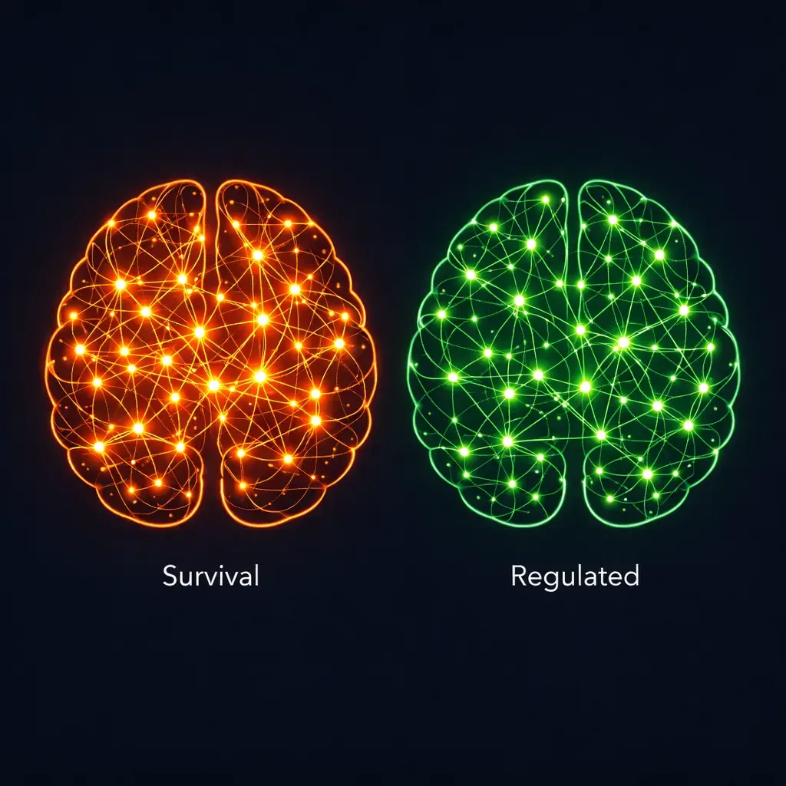
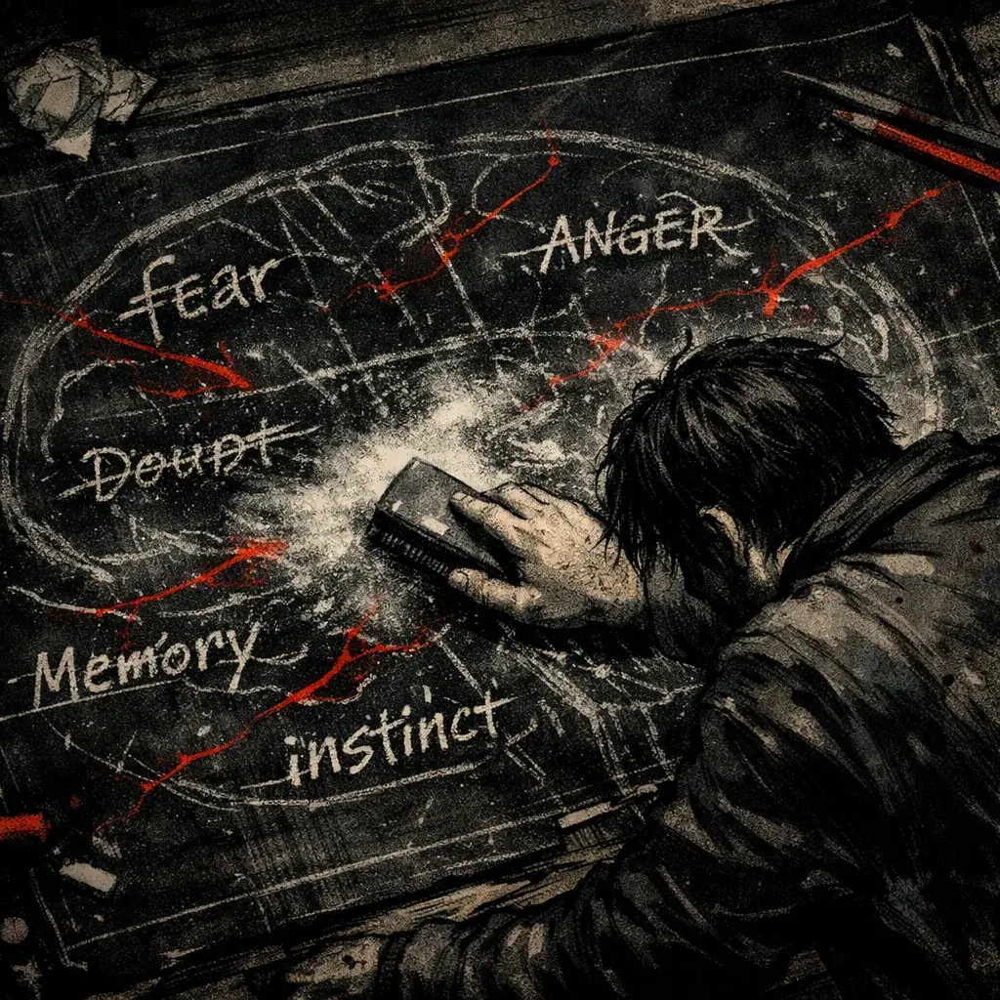

From conception through roughly age seven, the human brain is in the most dynamic period of development it will ever experience. By around age seven it has reached approximately 90 to 95 percent of its adult volume — which sounds like the hard work is mostly done. It isn't. Size is the least interesting part of the story. What's actually happening is the wiring — the formation and pruning of neural circuits that will determine, for the rest of that person's life, how efficiently they process emotion, regulate stress, and connect with other human beings.
This is not about blame. It's about biology. The environment a child develops in — emotionally, socially, physically — becomes the first architect of the nervous system, operating under a single directive written into its design from the beginning: adapt for survival. Not for flourishing. Not for happiness. For survival — whatever the current environment requires that to mean.
Every moment of nurture or neglect is being transcribed into the developing system — not as memory, not as narrative, but as structural wiring that will run silently beneath conscious awareness for decades. This is the blueprint. And most people never get to see it.
Seeing the blueprint doesn't mean you're locked into it. It means you finally have something you can work with.
Full nerd disclosure: the brain is one of the most genuinely astonishing things I have ever spent time reading about — and I say that as someone who has spent a considerable amount of time reading about things that were trying to kill me. Three pounds. Slightly wrinkled. Runs on glucose, electricity, and chemistry. Contains approximately 86 billion neurons — billion with a B — each one capable of forming thousands of individual connections, all shaped by experiences so specific to you that no two brains on the planet are wired identically. These cells communicate through electrochemical signals traveling at up to ~250 mph, producing thought, movement, emotion, and memory in simultaneous coordination. You think fingerprints are rare? I would argue brains are, by several orders of magnitude.
Think of it like a computer — except this one is biological, self-programming, and doing the programming while simultaneously running every other process that keeps you alive. The core architecture arrives pre-built, but the operating system gets written in real time as the brain encounters the world — constantly updating, installing new software, patching vulnerabilities, all in service of one primary goal: keeping you alive.
What makes early development specifically remarkable isn't just the brain's complexity — it's its radical adaptability. In early childhood, the brain exists in a state of open possibility — a vast network of roads being built simultaneously, where every experience determines which routes get paved into highways and which get quietly abandoned. This is neuroplasticity at its most extreme — and it never operates at this intensity again.
Most people assume children learn faster simply because they're newer to everything — empty containers absorbing skills through repetition. The truth is considerably more interesting. A child's brain isn't just less experienced — it's more fluid, more malleable, and genuinely less constrained by pre-existing patterns because most of those patterns haven't been laid yet. The main roads aren't paved. Which means creativity, flexibility, and imagination can move freely across the whole landscape. It's not innocence alone that makes childhood remarkable. It's the architecture.

Different wiring for different environments.
Neither is wrong. Both are adaptive.
But that same openness cuts both ways. When early experiences are nurturing — consistent care, attunement, safety, repair after rupture — the brain wires for curiosity, connection, and confidence. When those experiences are chaotic, frightening, or absent, the brain wires for survival. Not because anything went wrong with the brain. Because the brain did exactly what it was designed to do — adapted instantly to the environment it was given, without waiting for permission or better options. And without intentional repair later in life, that survival wiring persists — quietly shaping perception and behavior long after the original conditions are gone.
The very quality that makes the brain miraculous — its capacity to adapt to almost anything — is precisely what makes early adversity so difficult to undo. The brain wasn't broken by what happened. It was built by it. And built things require deliberate work to rebuild.
If you've ever asked yourself "Why can't I stop thinking this way?" — your brain is not working against you. It is working to protect you, using the only tools it was ever given, executing a threat-reduction protocol that was built long before you had any say in the design. That's not weakness. That's adaptation doing exactly what it was built to do.
This is also why a brain can keep you stuck in patterns that are quietly destroying everything you're trying to build. Its goal isn't sabotage — it's protection, applied to the wrong target. Over time, the brain can confuse relief with safety and keep steering you back toward what hurts, genuinely convinced it's doing its job. That confusion — between what feels safe and what actually is — is what makes recovery so difficult. And what makes continuing anyway so significant.
Recovery means interrupting the loop — not punishing yourself for having one. Every time you resist an old pattern, you are not white-knuckling your way through willpower. You are giving your brain the evidence it needs to build a new pathway. One refusal at a time.
The brain develops on a biological timetable — a sequence of critical and sensitive periods when specific systems must be built, reinforced, or calibrated. These windows function like construction phases: miss them, and what gets built in their place is always a workaround.
When the right input is missing, the brain doesn't stop — it adapts. It builds alternative routes to manage what it can't process directly. Those routes work. They carry hidden costs. And those costs travel forward into adulthood without a label that explains where they came from.
These aren't character flaws. They're engineering solutions — brilliant, costly, and poorly suited to the adult life they eventually have to navigate. Understanding the timing of these windows explains why early support is so powerful — and why later healing, while always possible, is work rather than recovery. You aren't returning to something. You're building something that was never there to begin with.
The ACE (Adverse Childhood Experiences) research confirmed what neurobiology had been building toward for decades: early adversity doesn't stay in the past. It leaves structural fingerprints — in the immune system, the endocrine system, the nervous system — that persist long after the original conditions are gone.
Trauma is not just remembered — it is embodied. It lives in the body's systems, not just in memory, running quietly beneath conscious awareness long after the danger has passed.
I can say this with unsettling personal clarity: these patterns didn't arrive for me through academic papers or graphs. They arrived as my life. My own inventory of diagnoses, symptoms, and health issues reads almost like a direct transcription from the outcomes identified in the original ACE Study — anxiety, PTSD features, attention dysregulation, chronic stress responses, addiction. All of it present. All of it named, finally, only after I understood where it came from. Before that, it just looked like me being broken.
Seeing my lived experience reflected in the data wasn't a devastating moment. It was clarifying. It meant the problem wasn't a defect in my character — it meant my early environment had shaped my biology in exactly the ways the research predicted. And if a brain can adapt that powerfully in one direction, it can — with the right conditions and deliberate effort — adapt in another. That's not optimism. That's the same mechanism, redirected.
The part most people resist accepting: the influence of early development doesn't stop at the border of childhood. It extends — quietly, structurally — into every decade that follows. Not because recovery is hopeless, but because the patterns built during critical and sensitive periods become the brain's default operating system. And default systems don't tend to update themselves just because circumstances improve. They typically keep running until something deliberately replaces them.
We prefer the story where growing up means growing out of the past — where maturity arrives on its own with wisdom, stability, and the quiet dissolution of everything that formed us under duress. Human development doesn't operate on fairy-tale logic. When early conditions are nurturing, the nervous system builds naturally toward connection, regulation, and resilience. When they aren't, it adapts for survival instead. And those survival adaptations do not spontaneously correct when the calendar says we're adults. They tend to persist.
Without new experiences and healthier models to build on, we don't evolve into better versions of ourselves. We repeat what we absorbed early — sometimes with variations, rarely in a meaningfully better direction. Adults don't override their wiring through good intentions. They live out the blueprint they were given until they do the deliberate work of rebuilding it.
This reframes what recovery actually is. Not a battle against weakness. Not a test of character. The process of finishing a development that was interrupted before it could complete. Learning the regulation skills, relational patterns, and emotional capacities the early environment never provided. You're not repairing a broken system. You're finally giving your brain the conditions it needed in the first place and never got.

This is where neuroplasticity stops being a concept and becomes a lifeline. The same mechanism that once wired you for survival in a dangerous world can now be directed toward stability, connection, and growth. Not because time has passed. Not because you've finally decided to try hard enough. But because you are creating — deliberately, consistently — the conditions for healing that were never present before. That's not magic. That's the brain doing what it has always done: adapting to its environment. You're just finally in charge of what that environment is.
Understanding this doesn't make the work easier — but it changes what the work actually is. Not managing symptoms indefinitely. Not performing recovery. Building, for the first time, the conditions your nervous system needed from the beginning: safety, honest connection, and a self you can act from rather than hide. The pages below go deeper into each piece of that.
Follow the next step in order, or branch out into related topics.
These references reflect the core scientific foundations of early brain development, sensitive periods, toxic stress, and the long-term health impacts identified in the ACE Study. They support the educational content on this page and are not a substitute for medical or clinical advice.